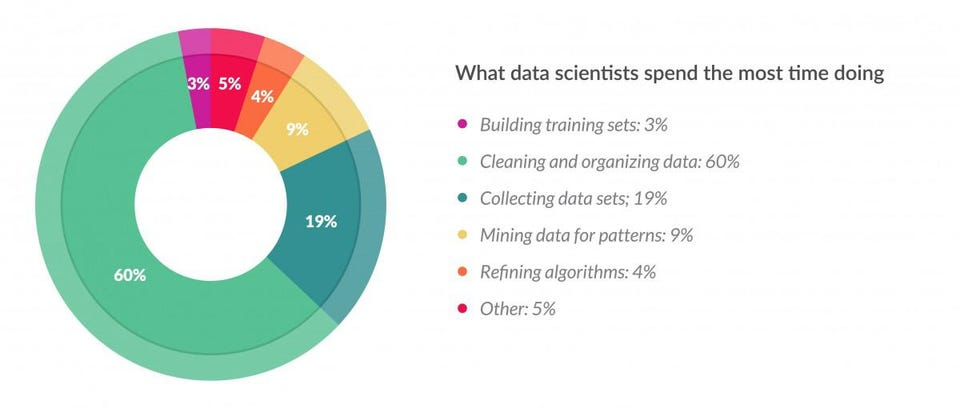
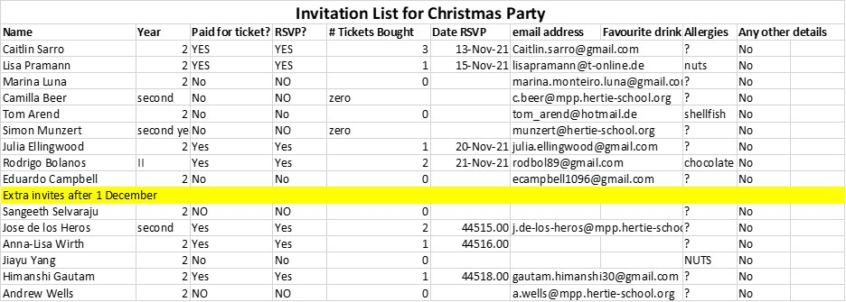
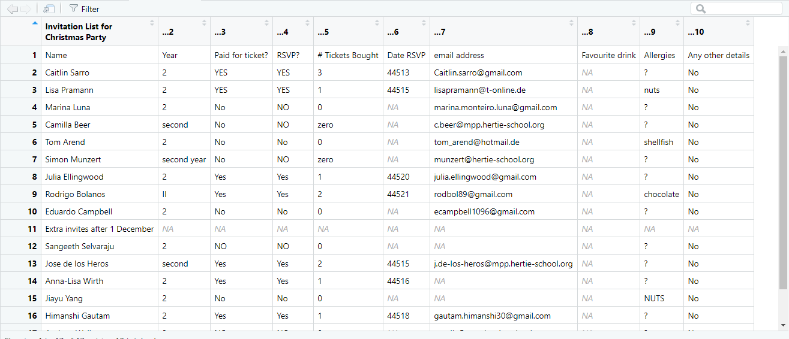
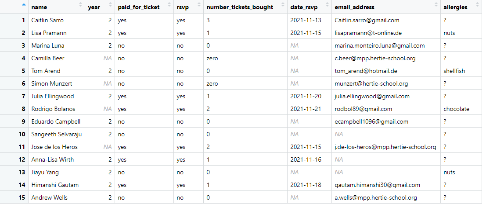

A new survey of data scientists conducted by CrowdFlower found that they spend most of their time cleaning rather than mining or modeling data. The survey indicates that data scientists spend 60% of their time on cleaning and organizing data. - Cleaning Big Data: Most Time-Consuming, Least Enjoyable Data Science Task, Survey Says

As a budding data scientist, do you feel like you spend a lot of time tidying data? Renaming columns, deleting unnecessary information, wrangling data into tidy data format? If your answer to this question is yes, this session is for you.✨
The janitor package is an excellent tool due to its user-friendly approach. The creators of this package aimed to facilitate a tool for beginning and intermediate R users. Advanced R users could do most of the janitor package functions without it, but janitor will save them time.
The janitor package is a R package that has simple functions for examining and cleaning dirty data. While cleaning and exploring data are some of its key functions, janitor also offers some functions to create and format frequency tables.
Due to time constraints, we will not be able to cover all the functions. However, if you are interested to learn what the other functions are, find them on this link.
The main janitor functions:
data.frame column namestable() function)It is important to note that janitor is a tidyverse-oriented package. In other words, it plays nicely with the %>% pipe and is optimized for cleaning data brought in with the readr and readxl packages.
In this presentation you will learn:
The presentation will be divided into two parts:
clean_names() 👩💻This function works in a %>% pipeline, and it handles problematic variable names. Some of the things that clean_names()does are:
row_to_names()If a dataset has the intended variable names stored in one of its rows, row_to_names will elevate the specified row to become the names of the data.frame and optionally (by default) remove the row in which names were stored and/or the rows above it.
remove_empty()The remove_empty() function removes any columns that are entirely empty and entire rows that are entirely empty.
get_dupes()This function is for hunting down and examining duplicate records during data cleaning. get_dupes()returns the records (and inserts a count of duplicates) so you can examine the problematic cases
remove_constant()This function drops columns from a data.frame that contain only a single constant value (with an na.rm option to control whether NAs should be considered as different values from the constant).
excel_numeric_to_date()Ever load data from Excel and see a value like 42223 where a date should be? This function converts those serial numbers to class Date, with options for different Excel date encoding systems
Let’s first observe how the data looks originally on excel

Let’s load the excel file and check how it loads in R.

We can see there are several problems with this data:
party <- read_excel("party.xlsx")
party_clean <- party %>% # Select the row which contains the column headers
row_to_names(row_number = 1) %>% # Return column names in snake case
clean_names() %>%
remove_empty(c("rows", "cols")) %>% # remove empty rows and columns
remove_constant(na.rm = TRUE) %>%
mutate(date_rsvp = convert_to_date(date_rsvp,
character_fun = lubridate::dmy),
year = as.numeric(year),
allergies = tolower(allergies),
paid_for_ticket = tolower(paid_for_ticket),
rsvp = tolower(rsvp))
Now we have removed the useless first row by using the row_to_names function and made the column names clearer using clean_names. We also removed the empty columns and rows. Finally, we also tidied the variables, making the date format clearer and the variables lower case. To do this we used a couple of tidyverse functions in addition to the janitor package, demonstrating how janitor is integrated with the broader tidyverse.
This section is not related to data cleaning per se, but creating compelling tables is a critical part of preparing data, and of the broader data science workflow.
tabyl() ✍️Janitor also offers a version of the table() function from base R, but in a much more powerful form. It is very useful for understanding tables and providing extra information that the function table() from base R does not offer.
tabyl() takes a vector and returns a frequency table, like table(). Nevertheless, some of its additional features are:
compare_df_cols()Generate a comparison of data.frames (or similar objects) that indicates if they will successfully bind together by rows.
adorn_totals()Append a totals row and/or column to a data.frame
adorn_percentage()Convert a data.frame of counts to percentages
adorn_pct_formatting()Format a data.frame of decimals as percentages
adorn_ns()Add underlying Ns to a tabyl displaying percentages
adorn_title()Add column name to the top of a two-way tabyl
Thanks for listening! Check out the tutorial, coming up next, for more hands-on practice with janitor functions.